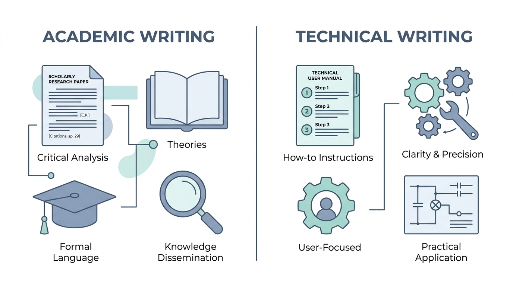
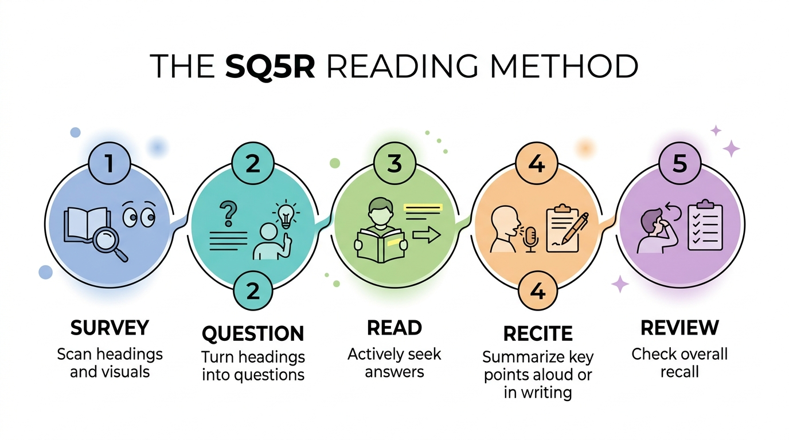

Interpreting Meaning in Spoken, Written, and Multimodal Academic and Technical Texts

Nature & 6 Characteristics
Slides 1–26: Exact definitions, core goals, and 6 core writing characteristics.
The APC Framework
Slides 27–36: Audience (4 types), Purpose (3 goals), and Context (3 dimensions).
Critical Strategies
Slides 37–48: Critical Reading (SQ5R, TEAC), Listening (Cornell, Reflective), Viewing.
Module 1: Nature & Characteristics of Academic and Technical Writing
Verbatim definitions, core goals, real-world examples, and the 6 essential writing characteristics directly from the lecture slides.
Academic Texts
Technical Texts
The 6 Core Characteristics of Academic & Technical Texts
These six characteristics form the core of Unit 2. All definitions, indicators, and examples below are quoted straight from the slide deck.
Evidence-Based / Objective
At the same time, the writing puts more emphasis on information and arguments and less on the feelings or personal perspectives of the writer, focusing entirely on the subject matter being discussed."
Key Indicators of Evidence-Based and Objective Texts (Slide 11):
- "Inclusion of survey results, laboratory data, statistics, and verifiable facts."
- "Consistent use of standardized in-text citations (e.g., APA, MLA) and complete reference lists."
- "Minimizing or eliminating first-person subjective expressions ('I think,' 'I feel,' 'in my opinion') in favor of objective phrasing."
Structured
Key Indicators of Structured Texts (Slide 14):
- "Tripartite Structure for Essays: A clear Introduction (hook, background, thesis statement), Body (evidence and analysis), and Conclusion (thesis restatement, summary, clincher)."
- "Modular / Hierarchical Setup for Technical Texts: Numbered steps, bulleted lists, clear headings, and subheadings."
Critical
Key Indicators of Critical Texts (Slide 17):
- "Analyzing why and how a phenomenon occurs rather than just summarizing what happened."
- "Identifying gaps, limitations, or contradictions in existing literature."
- "Evaluating the validity, credibility, and relevance of sources before integrating them into an argument."
Balanced
Key Indicators of Balanced Texts (Slide 20):
- "Acknowledging counterarguments, alternative explanations, or study limitations."
- "Using Modal Verbs: (may, suggest, appear, seem)."
- "Using Probability Adverbs: (likely, possibly, presumably, generally)."
- "Using Tentative Phrases: ('the data imply that...', 'results indicate a potential link...')."
Precise
Key Indicators of Precise Texts (Slide 23):
- "Using exact language and specific terms (e.g., using 'increase' or 'decrease' instead of merely saying the values 'changed')."
- "Quantifying observations with exact measurements, percentages, and statistical values rather than vague modifiers."
Formal
Key Indicators of Formal Texts (Slide 25):
- "Zero Colloquialisms, Figures of Speech, or Slang: Avoiding casual expressions (e.g., 'cool,' 'gonna,' 'trash')."
- "No Contractions: Spelling out words completely (e.g., writing 'cannot,' 'did not,' 'would have' instead of 'can't,' 'didn't,' 'would've')."
- "Standard Mechanics: Observing proper capitalization, punctuation, subject-verb agreement, and correct citation formatting."
Module 2: The APC of Academic and Technical Texts
The APC Triad
Click diagram to expand fullscreen.

1. Audience: 4 Types in Academic & Technical Contexts
2. Purpose (Slide 34)
- 1. To Inform / Explain: Present objective facts, descriptions, or explanations.
- 2. To Persuade / Argue: Convince the reader using logical argumentation and evidence.
- 3. To Instruct / Direct: Guide procedural human action safely, efficiently, and step-by-step.
3. Context (Slide 35 & 36)
- 1. Physical / Digital Setting: "Classroom, laboratory, professional conference, or online database."
- 2. Medium & Format: "Print journal, slide presentation, PDF report, or web infographic."
- 3. Discipline Expectations: "Humanities prioritize argument and textual evidence, while Sciences focus on methodology and replicable data."
Module 3: Critical Strategies for Interpreting Texts
Critical interpretation spans three core communication channels: Reading, Listening, and Viewing. Below are all strategies and models exactly as presented on the slides.
A. Critical Reading Strategies
1. Pre-Reading Strategies
- • Previewing: "Reading titles, abstracts, and captions to set reading goals."
- • SQ5R Model:

"Scan headings/ visuals"
"Turn headings into questions"
"Actively seek answers"
"Summarize key points"
"Check overall recall"
2. During Reading Strategies
- • Annotation: "Highlighting main claims, circling key terms, and writing questions in the margins."
- • TEAC Model for Paragraph Structure:

Verbatim TEAC Definitions (Slide 40):
3. Post-Reading Strategies
"A two-column graphic organizer that explicitly separates text evidence from student analysis."
"Deconstructing a text into a hierarchical alphanumeric or bulleted structure to make its organizational logic visible."
"Restating the central thesis and main supporting arguments of a text in your own words, removing minor details, examples, and repetitive phrasing."
B. Critical Listening Strategies
Critical Listening Strategies: 1. Active Listening · 2. The Cornell Note-Taking System · 3. Reflective Listening."
1. Active Listening
- Paying Attention: "Giving total focus to verbal cues, vocal tone, and body language."
- Evaluating: "Analyzing the logical validity of the arguments and checking if claims are supported by facts."
- Responding Thoughtfully: "Formulating questions or feedback based on accurate facts rather than emotional reaction."
2. The Cornell Note-Taking System
"Formulated immediately after the lecture; record key vocabulary terms, main themes, and potential exam questions."
"Record main lecture concepts, facts, and equations using abbreviations and bullet points during the presentation."
"Write a 2-4 sentence summary in your own words synthesizing the page's core content."

3. Reflective Listening

C. Critical Viewing Strategies
Graphic hierarchy, framing, color psychology, and symbolic iconography used to direct viewer emphasis.
Ensuring chart axes begin at zero with proportional, uniform intervals to prevent exaggerated distortions.
Evaluating dataset recency, publication credibility, sampling integrity, and checking for commercial/sponsor bias.
⚡ High-Yield Exam Cram Sheet (Verbatim Essentials)
Exact definitions and rules from the 48 slides compiled for rapid last-minute memorization.
Academic vs Technical Texts (Slides 4–7)
- Academic Text: "Formal, structured, linear, and evidence-based writing used in scholarly settings to analyze ideas, construct arguments, or build knowledge." (Goal: inform, analyze, persuade).
- Technical Text: "Functional, practical, and highly precise writing designed to instruct, direct, or document procedures so readers can perform tasks safely and efficiently." (Goal: guide action, explain process, document data).
- Shared Umbrella (Slide 8): Formal, informative communication.
The 6 Characteristics (Slides 8–26)
- 1. Evidence-Based/Objective: Supported by empirical data/facts; zero first-person feelings ("I think", "I feel").
- 2. Structured: Tripartite Structure (Intro, Body, Conclusion); Technical = Modular (numbered steps, subheadings).
- 3. Critical: Analytical depth; asks *why and how*, finds literature gaps, evaluates source validity.
- 4. Balanced: Multi-perspective, avoids sweeping claims. Hedging: modal verbs (*may, suggest*), adverbs (*likely, possibly*), tentative phrases.
- 5. Precise: Exact data (use *increased/decreased* instead of *changed*); quantifies numbers, units, and percentages.
- 6. Formal: Zero slang/colloquialisms, no contractions (spell out *cannot, did not*), standard mechanics.
The APC Framework (Slides 27–36)
- Audience (Slide 29): Dictates level of detail, tone, and vocabulary.
• Expert (Slide 30): Use specialized technical jargon directly without defining basic concepts.
• Non-Expert / Lay (Slide 31): Simplify terms, use relatable everyday analogies, define terms immediately.
• Peer (Slide 32): Balance professional rigor with engaging, relatable explanations.
• Academic Evaluator (Slide 33): Demonstrate complete mastery, rigorous citation, and strict formal structure. - Purpose (Slide 34): 1. To Inform / Explain, 2. To Persuade / Argue, 3. To Instruct / Direct.
- Context (Slide 35 & 36): Setting, Medium/Format, Discipline Expectations (Humanities = argument/textual evidence; Sciences = methodology/replicable data).
Critical Strategies (Slides 37–48)
- Reading Pre (Slide 39): Previewing & SQ5R (Survey, Question, Read, Recite, Review).
- Reading During (Slide 40): Annotation & TEAC (Topic sentence, Evidence, Analysis, Clincher).
- Reading Post (Slide 41): Double-Entry Journaling (text evidence vs student analysis), Outlining, Summarizing.
- Listening Active (Slide 43): Paying Attention, Evaluating, Responding Thoughtfully.
- Listening Cornell (Slide 44): Left Cue (30% width), Right Notes (70% width), Bottom Summary (2-3 inches).
- Listening Reflective (Slide 46): Paraphrasing: *"If I understand correctly, you are saying that [paraphrase]. Is that correct?"*
- Viewing (Slide 47): Visual Grammar, Scale Integrity (zero baseline), Source Credibility.
Interactive Flashcards (Verbatim Deck)
Test active recall using verbatim slide definitions. Press Space to flip, and ← → arrows to navigate.
Academic Texts
Click card or press Space to reveal verbatim definition
"Formal, structured, linear, and evidence-based writing used in scholarly settings to analyze ideas, construct arguments, or build knowledge for academic evaluators and readers."
Comprehensive Practice Exam (25 Questions)
Mapped word-for-word against all 48 slides. Test your mastery and review instant rationale explanations.
Great Job!
You have demonstrated high proficiency across the Effective Communication slides.
Interactive Study Tools
Hands-on tools reinforcing the Cornell Note-Taking proportions and chart scale integrity.
Interactive Cornell Note Simulator (Slide 44 & 45)
Practice the verbatim layout: Left Cue Column (30% width), Right Notes Column (70% width), and Bottom Summary Block (2-3 inches).
Cue Column (30% Width - Slide 44)
• 6 Characteristics?
• What is Hedging?
• 4 Audience types?
• SQ5R steps?
• TEAC paragraph?
Notes Column (70% Width - Slide 44)
- Technical: Practical, guides human action, user manuals/SOPs.
- 6 Rules: Evidence-based (data), Structured (Tripartite/Modular), Critical (depth/why), Balanced (hedging: modal verbs), Precise (quantify numbers), Formal (no contractions/slang).
- APC: Audience dictates jargon; Purpose = inform/persuade/instruct; Context = setting/discipline.
- SQ5R: Survey, Question, Read, Recite, Review.
- TEAC: Topic Sentence, Evidence, Analysis, Clincher.
Summary Block (Bottom 2-3 Inches - Slide 44)
Scale Integrity Interactive Demo (Slide 47)
Slide 47 emphasizes Scale Integrity. Adjust the slider to see how truncating the Y-axis baseline turns a modest 2% difference into an exaggerated visual distortion.
Verbatim Slide Terminology Glossary
Comprehensive master glossary: every single term, definition, indicator, and example from all 48 slides quoted word-for-word with exact slide citations.
| Term | Slide | Category | Verbatim Slide Definition & Key Indicators |
|---|---|---|---|
| Academic Evaluator | Slide 33 | Audience | "Teachers, professors, or panel defense members who grade output." Appropriate strategy: "Demonstrate complete mastery, rigorous citation, and strict formal structure." |
| Academic Text | Slide 4 & 5 | Genre | "Formal, structured, linear, and evidence-based writing used in scholarly settings to analyze ideas, construct arguments, or build knowledge for academic evaluators and readers." Core Goal: "To inform, analyze, or persuade using scholarly research." Examples: Research articles, position papers, literature reviews, academic essays. |
| Active Listening | Slide 43 | Listening | "Focuses full cognitive attention on the speaker, filtering out distractions and withholding hasty judgments until the message is fully delivered." How to do it: Paying Attention (verbal cues, vocal tone, body language), Evaluating (logical validity of arguments, facts), Responding Thoughtfully (accurate facts rather than emotional reaction). |
| Annotation | Slide 40 | Reading | "Highlighting main claims, circling key terms, and writing questions in the margins." (During-reading strategy). |
| APC of Academic and Technical Texts | Slide 28 | Framework | "Considering Audience, Purpose, and Context (APC) is a fundamental rule of communication that applies across every single register—from a quick text to a friend to a formal academic paper or a workplace technical report." |
| Audience | Slide 29 | APC | "Understanding who will read your text dictates the level of detail, tone, and vocabulary required." 4 Types: Expert, Non-Expert / Lay, Peer, Academic Evaluators. |
| Balanced | Slide 19 & 20 | Characteristic | "Academic writing aims to consider different perspectives or arguments on an issue or topic to avoid being biased or one-sided. Writers exercise caution when making claims or conclusions to avoid making sweeping generalizations or unfounded statements." Indicators: acknowledging counterarguments, modal verbs (may, suggest, appear, seem), probability adverbs (likely, possibly, presumably, generally), tentative phrases ("the data imply that...", "results indicate a potential link..."). |
| Context | Slide 35 & 36 | APC | "Context encompasses the surrounding circumstances, environment, medium, and constraints of the interaction. It dictates the format, length, timing, and boundary conditions of your message." Examples: 1. Physical / Digital Setting, 2. Medium & Format, 3. Discipline Expectations. |
| Cornell Note-Taking System | Slide 44 & 45 | Listening | "A structured format for taking, organizing, and reviewing lecture notes." Notes Column (Right, 70% width): main concepts, facts, equations, abbreviations during lecture. Cue Column (Left, 30% width): vocabulary, main themes, exam questions after lecture. Summary Block (Bottom, 2-3 inches): 2-4 sentence summary in own words synthesizing core content. |
| Critical | Slide 16 & 17 | Characteristic | "Academic writing requires analytical and evaluative thinking. Writers must not merely describe or summarize information; they must develop clear, logical arguments, create depth, avoid stating the obvious, and uncover underlying insights." Indicators: analyzing why and how, identifying gaps/contradictions, evaluating source validity/relevance. |
| Critical Listening | Slide 42 | Listening | "Critical listening in academic settings requires evaluating arguments, assessing supporting evidence, and understanding messages beyond spoken words." 3 Strategies: Active Listening, Cornell Note-Taking System, Reflective Listening. |
| Critical Reading | Slide 38 | Reading | "Critical reading involves analysis, interpretation, and evaluation. It requires moving beyond passive reading to actively question, analyze, and evaluate how an author constructs an argument." 3 Stages: Pre-Reading, During Reading, Post-Reading. |
| Critical Viewing | Slide 47 | Viewing | "Critical viewing empowers learners to decode, analyze, and evaluate multimodal visuals (charts, diagrams, infographics, and videos) to detect bias, identify manipulated data, and verify claims." What to look out for: 1. Visual Grammar, 2. Scale Integrity, 3. Source Credibility. |
| Discipline Expectations | Slide 36 | Context | "Humanities prioritize argument and textual evidence, while Sciences focus on methodology and replicable data." |
| Double-Entry Journaling | Slide 41 | Reading | "A two-column graphic organizer that explicitly separates text evidence from student analysis." (Post-reading strategy). |
| Evidence-Based / Objective | Slide 9 & 10 | Characteristic | "Arguments, claims, and conclusions presented in academic and technical contexts must always be supported by empirical data, reputable facts, expert insights, or primary observations. At the same time, the writing puts more emphasis on information and arguments and less on the feelings or personal perspectives of the writer, focusing entirely on the subject matter being discussed." Indicators: survey results, lab data, statistics, verifiable facts; standardized citations (APA, MLA); minimizing first-person expressions ("I think," "I feel," "in my opinion"). |
| Expert Audience | Slide 30 | Audience | "Specialists who possess deep background knowledge (e.g., scientists, engineers)." Appropriate Strategy: "Use specialized technical jargon directly without stopping to define basic concepts." |
| Formal | Slide 24 & 25 | Characteristic | "Academic writing observes formal conventions of writing. Adhering to formal language and tone maintains professionalism, establishes authority, and ensures respect across scholarly and technical communities." Indicators: zero colloquialisms/slang ("cool," "gonna," "trash"), no contractions ("cannot," "did not" instead of "can't," "didn't"), standard mechanics. |
| Hedging / Tentative Language | Slide 20 | Language | Cautious phrasing in Balanced writing: Modal Verbs (may, suggest, appear, seem), Probability Adverbs (likely, possibly, presumably, generally), and Tentative Phrases ("the data imply that...", "results indicate a potential link..."). |
| Medium & Format | Slide 36 | Context | "Print journal, slide presentation, PDF report, or web infographic." |
| Modular / Hierarchical Setup | Slide 14 | Structure | Format for Technical Texts: "Numbered steps, bulleted lists, clear headings, and subheadings." |
| Non-Expert / Lay Audience | Slide 31 | Audience | "Readers with little or no technical background (e.g., the general public)." Appropriate Strategy: "Simplify complex terms, use relatable everyday analogies, and define technical terms immediately." |
| Outlining | Slide 41 | Reading | "Deconstructing a text into a hierarchical alphanumeric or bulleted structure to make its organizational logic visible." (Post-reading strategy). |
| Peer Audience | Slide 32 | Audience | "Fellow students or colleagues with a similar level of training." Appropriate Strategy: "Balance professional rigor with engaging, relatable explanations." |
| Physical / Digital Setting | Slide 36 | Context | "Classroom, laboratory, professional conference, or online database." |
| Precise | Slide 22 & 23 | Characteristic | "Academic and technical writing strives to provide clear, accurate, and correct information that clearly captures what the data show. Vague descriptors create ambiguity, lead to costly errors, or render scientific procedures non-replicable." Indicators: exact language (use "increase" or "decrease" instead of "changed"), quantifying with exact measurements, percentages, and statistical values. |
| Previewing | Slide 39 | Reading | "Reading titles, abstracts, and captions to set reading goals." (Pre-reading strategy). |
| Purpose | Slide 34 | APC | "Purpose defines the intended goal or outcome of your text. It determines the structure, strategy, focus, and call to action." 3 Purposes: 1. To Inform / Explain, 2. To Persuade / Argue, 3. To Instruct / Direct. |
| Reflective Listening | Slide 46 & 48 | Listening | "Paraphrasing or restating the speaker's core message back to them to confirm accurate interpretation before moving forward." Formula: "If I understand correctly, you are saying that [paraphrased main point]. Is that correct?" |
| Scale Integrity | Slide 47 | Viewing | Scrutinizing chart axes so that baselines begin at zero, intervals are uniform, and representations reflect proportional data values without distortion. |
| Source Credibility | Slide 47 | Viewing | Evaluating dataset recency, publication credibility, sampling integrity, and checking for commercial/sponsor bias. |
| SQ5R Method | Slide 39 | Reading | Pre-reading study system: Survey (scan headings/visuals), Question (turn headings into questions), Read (actively seek answers), Recite (summarize key points), Review (check overall recall). |
| Structured | Slide 13 & 14 | Characteristic | "It should follow a predictable, logical, and standardized organizational pattern. This structure serves as a roadmap that guides the reader seamlessly through complex ideas without unnecessary digressions or scatter." Essays: Tripartite Structure. Technical: Modular / Hierarchical Setup. |
| Summarizing | Slide 41 | Reading | "Restating the central thesis and main supporting arguments of a text in your own words, removing minor details, examples, and repetitive phrasing." (Post-reading strategy). |
| TEAC Model for Paragraph Structure | Slide 40 | Reading | Paragraph organizational formula: T (Topic Sentence: states main claim), E (Evidence: presents statistics, study results, expert quotes), A (Analysis: explains how evidence proves topic sentence), C (Clincher/Conclusion: summarizes point or transitions to next paragraph). |
| Technical Text | Slide 6 & 7 | Genre | "Functional, practical, and highly precise writing designed to instruct, direct, or document procedures so readers can perform tasks safely and efficiently." Core Goal: "To guide action, explain a technical process, or document data." Examples: User manuals, Standard Operating Procedures (SOPs), safety guidelines, lab reports. |
| Tripartite Structure for Essays | Slide 14 | Structure | "A clear Introduction (hook, background, thesis statement), Body (evidence and analysis), and Conclusion (thesis restatement, summary, clincher)." |
| Visual Grammar | Slide 47 | Viewing | Examining layout hierarchy, color coding, framing, and iconography in multimodal visual texts. |